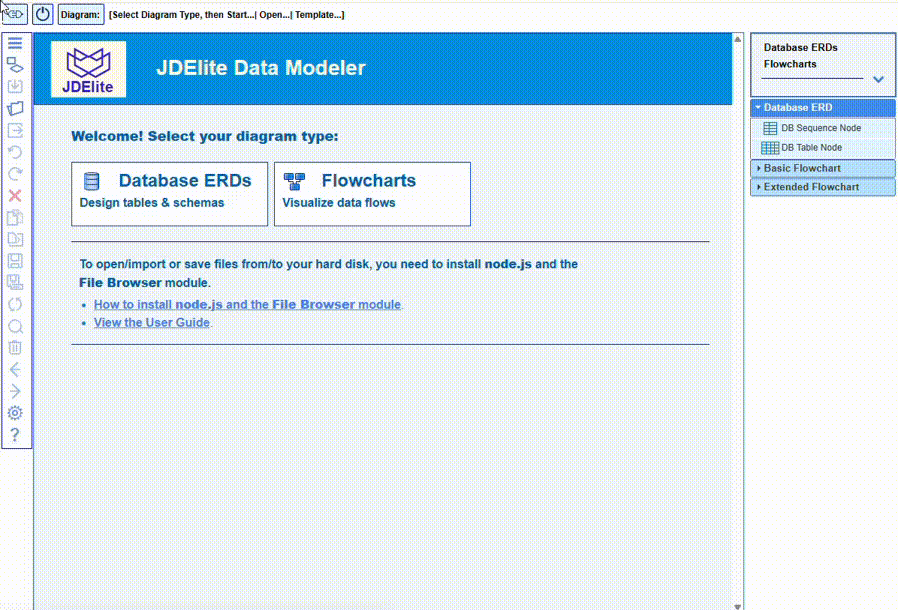

JDElite Data Modeler offers design and modeling solutions for a wide variety of use cases.
The start page shows the paths to the two supported diagram types. You can switch to Flowcharts or Database ERDs at any time by clicking the Start Here button on the top of the toolbar.
